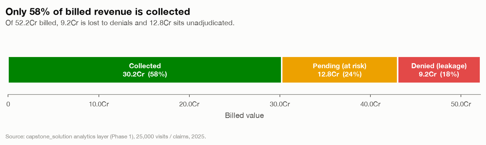
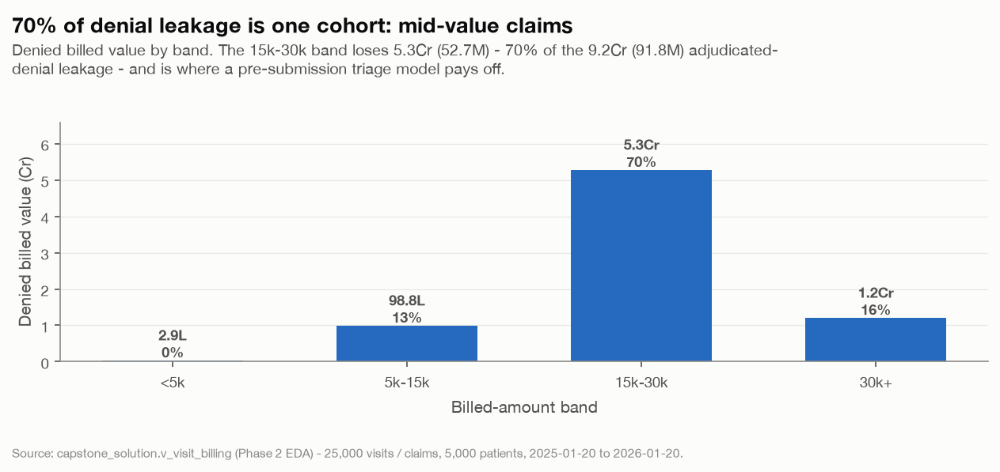
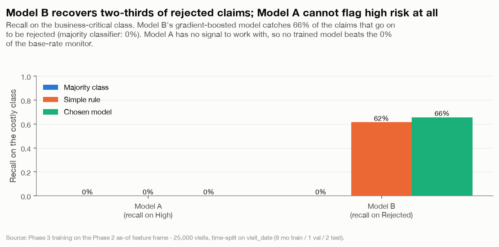
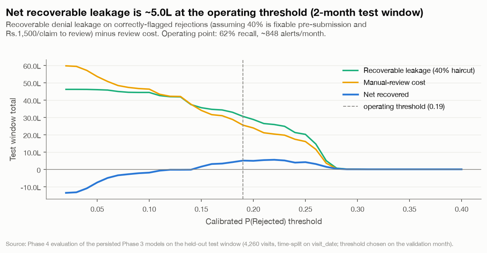
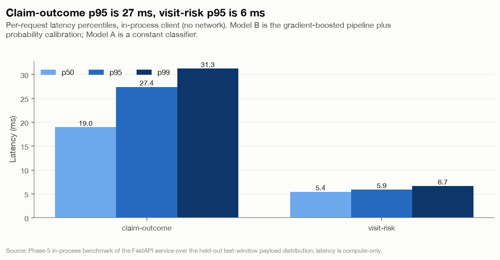
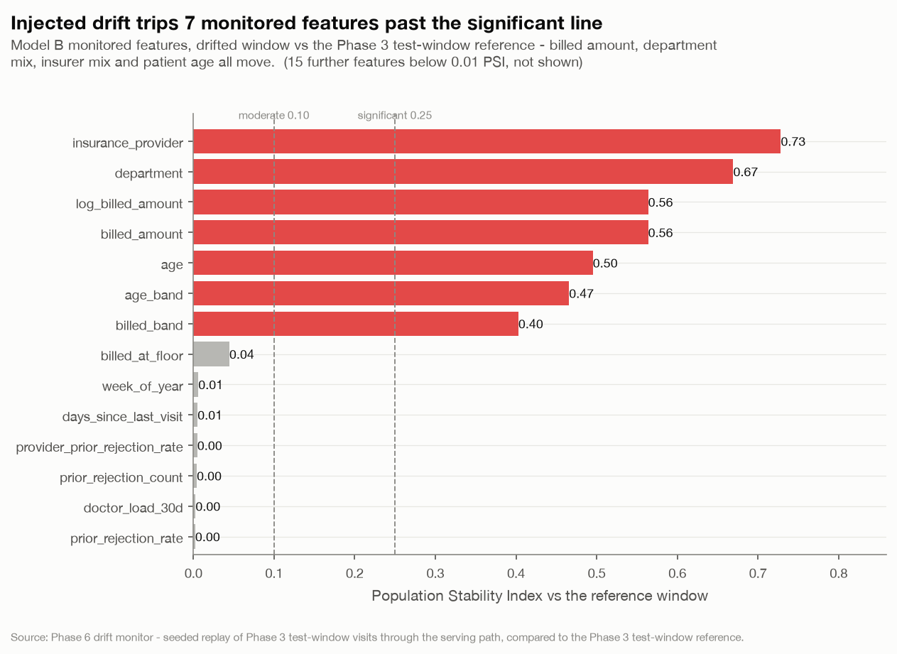

A multi-specialty, multi-city network was losing money to blind patient flow, silent revenue leakage, and lagging reports. This platform turns one calendar year of visit and claims data into a queryable analytics layer, a pre-submission claim-outcome model with a documented business case, a served API, and a drift-monitored, governed deployment — end to end, six phases, one cohesive system.
The business problem
Measured directly from the network's own 2025 data — 5,000 patients, 25,000 visits, 25,000 claims across departments, providers and insurers.
No forward view of where demand, acuity and length-of-stay pressure will land, so staffing and bed planning stay reactive instead of planned.
Insurance claims are rejected or under-approved after the fact — 17.6% of billed value lost to denials, another 24.5% sitting in pending limbo.
Decisions are made on lagging reports, not on risk-scored, forward-looking signals a claims team can act on before submission.
How the platform fits together
One pipeline, six phases, no hand-offs outside the repo — the same Postgres schema, feature catalogue and leakage register run from raw CSV to a served, monitored prediction.
Raw CSVs → typed Postgres tables → curated feature frame → two calibrated classifiers → an evaluated, priced decision → a served, logged API → a monitored, governed production loop.
The platform, phase by phase
Three raw CSVs become a trusted, indexed capstone_solution schema — PKs, FKs and CHECK constraints enforced in-database, ten business-intelligence views, and a 12-check automated data-quality report. This is the spine every later phase reads from.

Turns the analytics layer into modelling readiness: every candidate feature is profiled for signal against the permuted-target noise floor, four data-quality findings get a written handling policy, and the leakage register that governs Phase 3 is written down field by field.

Model A (visit risk) and Model B (pre-submission claim outcome) are both split on visit_date — 9 months train, 1 validate, 2 test, no shuffle — and calibrated on the validation month. Only the learned candidate that clears both the majority baseline and the domain simple-rule ships; otherwise the baseline itself ships as a monitor.

Turns Model B into an operating decision: the calibrated P(Rejected) threshold is chosen on validation to maximise net recoverable leakage, verified clean of leakage by ablation (injecting a forbidden field spikes accuracy to 0.96 — the shipped model sits at the clean row), and checked for fairness across gender, age band, city and insurer.

Serves the persisted Phase 3 models behind two endpoints, strict Pydantic validation bound to the Phase 1 domain constraints, and a Postgres prediction log that becomes Phase 6's drift baseline. Every response echoes its model, feature-spec and threshold versions.
/predict/claim-outcome (review vs submit) and /predict/visit-risk (a base-rate monitor, not a per-visit decision), plus /model-info and /health.
Watches the prediction log a real deployment would generate: a request-validation gate, feature/prediction/performance drift against the Phase 3 training reference, an append-only drift_report and audit trail enforced by a database trigger, a Grafana dashboard, and the governance, retraining-policy and incident-runbook documents.

What this means for leadership
Responsible deployment
visit_date is the only temporal key; no post-outcome field can reach either model, checked by leakage_violations() before every fit and proven by ablation at evaluation time.prediction_log, drift_report and prediction_override reject UPDATE/DELETE at the database level — every prediction and every manual override is permanent.serving_config.json.Build status
| Phase | Scope | State |
|---|---|---|
| 1 | SQL analytics layer (Postgres) | Built |
| 2 | EDA & data quality | Built |
| 3 | Model development (classification) | Built |
| 4 | Evaluation & explainability | Built |
| 5 | Deployment & API (FastAPI) | Built |
| 6 | Monitoring, drift & governance | Built |
| — | Executive presentation (this site) | Built |
One command reproduces the whole stack from a clean checkout — docker compose up -d, then each phase's run_phase<n>.py. See the repository README ↗ for the full walkthrough.